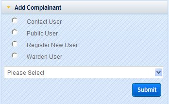
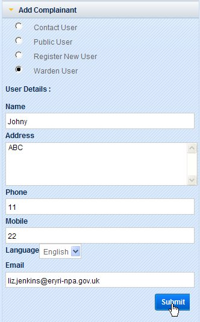
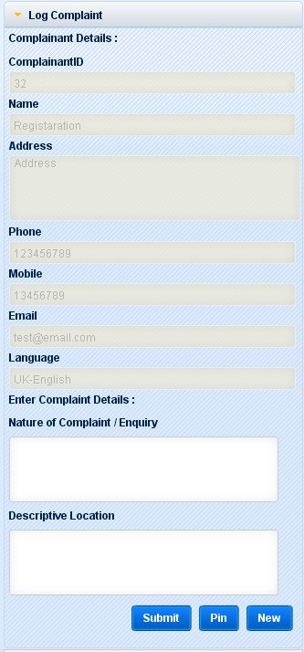
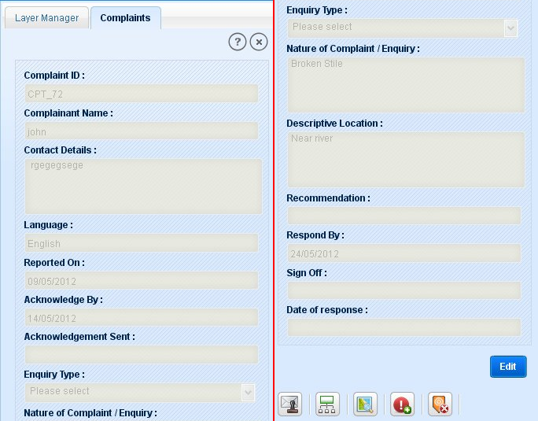
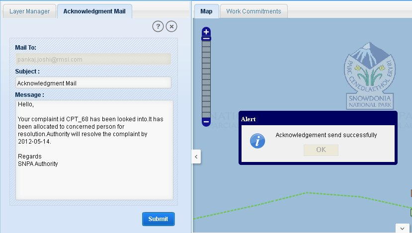
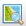

Complaint functionality enables users to log complaint on SNPA application and to search previously logged complaints. To add complaint on a feature, first user has to zoom to the location of feature on map.
Complaints can be logged directly by the public users by logging into the RoW application or by the SNPA user (on behalf of public user) on receiving a complaint by telephone.
As a public user logs in to the application to log a complaint, user clicks on Complaint tool on main tool bar. Application opens a Complaint tab in left panel. This tab consist two links: Log Complaint (default open) and Search Complaints.
To log a complaint, click on ‘Log Complaint’ tool. Application opens a form in left panel of page. This form has two parts - Complainant Details and Complaint details. Complainant details are auto filled according to logged in user. These fields are: ComplainantID, Name, Address, Phone, Mobile, Email and Language. In Complaint Details part, there are two fields: Nature of Complaint/ Enquiry and Descriptive Location. Complaint form contains three buttons: Submit Pin and New.
User completes form by filling nature of complaint and descriptive location.
Click on Pin button and click on the location on map where user wants to log complaint. A push pin mark will be displayed at clicked location.
User can clear the complaint details and pinned location of complaint by clicking on ‘New’ button if user entered wrong details or clicked at incorrect location on map.
After filling all the details, click on ‘Submit’ button. A message will be displayed to user for successful submission of complaint with complaint id.
User clicks on Search Complaints.
Application shows a text box Complaint Id with a button ‘Search’.
Enter complaint id in the text box and click on Search button. Application shows complaint details and a link ‘Locate on Map’ to view the complaint location on map.
Click on ‘Locate on Map’ link. Application zooms to the location and highlights that complaint.
SNPA User can log a complaint by clicking on Complaint icon in the tool bar. Application opens up complaint tab with three options: Add Complainant (Default open), Log Complaint and Search Complaint.
In Add complainant, SNPA user will select type of complainant: Contact users/Public User/Register New User or Warden User

Fig.1 Adding Complainant
Add complainant section will display three options as radio buttons: Contact User, Public User, Register New User and Warden User with a drop-down box ‘Select User’ and a button ‘Submit’.
If user selects ‘Contact User’, application displays all the contractors in the drop-down list. And if user selects ‘Public User’, application displays all the list of registered public users in the drop-down.
Click on Contact User or Public User radio button. Application will show users list in the drop down list according to selected option.
Select user and click on ‘Submit’ button. Application will show a message “Complainant details added”.
If user selects Register New User option from Add Complainant section. User will be directed to the new public user registration form.
User enters all details and clicks on ‘Sign Up Now’. As application displays the message for successful user creation, it means user is added to the database.
Now user can log complaint against the new user registered in the application by again clicking on Log complaint tool.
When user reaches to Add Complainant section, he can see the new registered user in drop-down list by selecting public user option.
If a Warden logs complaint on behalf of a public user who dont have a mail-id, warden selects Warden User option.
Application displays a form to fill the user details.
Enter name, address, phone no., mobile no (optional) of that persona and select his/her language preference.
And if user dont have a mail-id, warden can enter his mail-id for that public user.
Click on Submit button. Application displays a message for successful user regiseration and user details will be added for complaint.

Fig.2 Adding Complainant as Warden User
Post selection of complainant, click on Log Complaint option to log complaint. Selected complainant details will be shown in the complainant details part.
Enter Nature of Complaint/ Enquiry and Descriptive Location in complaint details part.
Click on ‘Pin’ button and click at required location on map. Application shows a push pin mark at clicked location.
Now click on ‘Submit’ button. A message will be displayed to user for successful submission of complaint with complaint id.
User can clear the complaint details and pinned location of complaint by clicking on ‘New’ button if user entered wrong details or clicked at incorrect location on map.

Fig.3 Complaint logging by SNPA user
Similarly as described above for public user, a SNPA user can search any complaint using Search Complaint section. Enter complaint id and click on Search button. Application will show the complaint details if exist. User can view it on map by just clicking on ‘Locate on Map’ link.
This module allows SNPA user to view a complaint’s information in detailed view.
To view the attributes of a complaint:
Make Complaint layer as active layer.
Select a complaint by any of tools (Select Feature/ Select By Rectangle or Polygon/Search/Query Builder).
Application opens result panel with all the selected records. Select required record and click on Detailed Info tool.
Application opens Complaint tab in left panel with all the attributes in read only format with an Edit buttons and some of the tools.
User can also view a complaint details from Complaints part of Work Commitment.

Fig.4 Complaint Tab
The functionalities available for the complaints are:
Edit Complaint Details
Send Acknowledgement
Go to Parent Issue
Locate on Map
Create New Issue
Close Complaint
These functionalities are described in detail below:
This functionality allows user to edit the complaint details.
Click on Edit button below the attributes information. Application changes the format to editable mode for some of the fields.
The edit button is replaced by ‘Cancel’ and ‘Save’ button.
After doing the required changes in complaint details, click on ‘Save’ button or user can discard the changes without saving them by clicking on ‘Cancel’ button.
On clicking ‘Save’ button, application saves the changes to database with a message "Data Successfully Updated".
This functionality allows a SNPA user to send acknowledgement for a complaint for which issue has been created. To send acknowledgement:
Click on Send Acknowledgement tool, application displays an auto-generated mail with the mail id of the complainant in left panel as Acknowledgement Mail.
User can change the mail subject and content of the mail.
Click on Submit button. Application displays a pop-up message “Acknowledgement Sent Successfully”.

Fig.5 Sending Acknowledgement
This tool facilitates user to see the details of the issue created for a complaint or assigned issue for complaint.
Click on ‘Go to Parent Issue’ on detailed information of complaint.
If issue exists for that complaint, application displays the issue details in Issue tab on left panel.
If issue does not exist, a message pops-up to inform that “No Issue associated with this Complaint”.
This tool allows user to view the complaint location on map canvas. Click on ‘Locate on Map’  tool and application highlights and zooms to the location on map tab in main window.
This functionality allows user to create issue for the selected complaint.
Click on ‘Create Issue’ tool on Complaint tab.
Application opens Editing tab in left panel with Issue layer selected as editable layer.
Click on Create link, application expands the link.
Select point tool and click on the map over selected complaint. If user clicks on any other location then selected complaint, application displays message “No complaint found on this location”.
Application expands Edit Attribute link with all the issue fields.
Enter the values for fields and click on ‘Apply’ button.
Application displays message to click on save button. Click on ‘Save’ button.
Application shows message for successful creation of issue with Issue ID.
This functionality allows user to close complaint.
Click on ‘Close Complaint’ tool on Complaint tab.
Application displays an autogenerated mail in Close Complaint Mail tab.
This mail has complainant mail-id with subject as Complaint Resoved.
User can edit subject and content.
Click on Submit button.
A message pops-up as "Complaint closed successfully".And a mail is sent to Complainant.